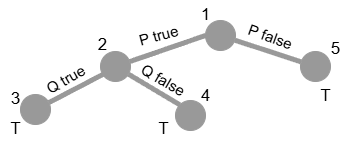
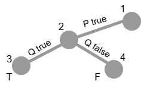

Assalamu'alaikum wr. wb., selamat malam, saya Esa Sya'bani asal UPBJJ Purwokerto prodi S1 sistem informasi izin menanggapi topik diskusi yang bapak berikan.
Definisi Kalimat Valid
Valid adalah salah satu sifat dari kalimat logika proposisional. Suatu kalimat F dikatakan valid jika F bernilai true di bawah (under) setiap interpretasi I untuk F. Kalimat valid dalam logika proposisional kadang-kadang disebut tautology. Artinya jika ada satu saja interpretasi J untuk F dan F bernilai false di bawah J, kalimat F dikatakan tidak valid.
Pembuktian Validitas
Untuk pembuktian validitas suatu kalimat salah satunya dapat menggunakan pohon semantik, berikut ini untuk mempermudah pembuktiannya saya buatkan pohon semantiknya.
Kalimat:
K1: (if P then Q) if and only if (if notQ then notP)

-
Jalur node 1-node 2
P: true
if P then Q: belum bisa ditentukan nilainya
notQ: belum bisa ditentukan nilainya
notP: false
if notQ then notP: belum bisa ditentukan nilainya
(if P then Q) if and only if (if notQ then notP): belum bisa ditentukan nilainya
-
Jalur node 1-node 2-node 3
P: true
Q: true
if P then Q: true
notQ: false
notP: false
if notQ then notP: true
(if P then Q) if and only if (if notQ then notP): true
-
Jalur node 1-node 2-node 4
P: true
Q: false
if P then Q: false
notQ: true
notP: false
if notQ then notP: false
(if P then Q) if and only if (if notQ then notP): true
-
Jalur node 1-node 5
P: false
if P then Q: true
notQ: belum bisa ditentukan nilainya
notP: true
if notQ then notP: true
(if P then Q) if and only if (if notQ then notP): true
Dari pohon semantik tersebut didapatkan semua node leaf bernilai true, sehingga bisa disimpulkan kalimat K1: (if P then Q) if and only if (if notQ then notP) bersifat valid.
Kalimat:
K2: (if P then Q) if and only if (if Q then P)

-
Jalur node 1-node 2
P: true
if P then Q: belum bisa ditentukan nilainya
if Q then P: true
(if P then Q) if and only if (if Q then P): belum bisa ditentukan nilainya
-
Jalur node 1-node 2-node 3
P: true
Q: true
if P then Q: true
if Q then P: true
(if P then Q) if and only if (if Q then P): true
-
Jalur node 1-node 2-node 4
P: true
Q: false
if P then Q: false
if Q then P: true
(if P then Q) if and only if (if Q then P): false
Dari pohon semantik tersebut didapatkan terdapat node leaf yang bernilai false, sehingga tanpa kita harus melanjutkannya lagi sudah dapat disimpulkan bahwa kalimat K2: (if P then Q) if and only if (if Q then P) bersifat tidak valid, namun satisfiable.
Kesimpulan
Jadi, kalimat K1 dan K2 tidak sama-sama kalimat valid. Kalimat K1 merupakan kalimat valid karena kalimat K1 bernilai true di bawah setiap interpretasinya, yang ditandai dengan node leaf yang bernilai true. Sedangkan pada kalimat K2 bukan merupakan kalimat valid karena kalimat K2 teradapat nilai false di bawah interpretasinya, yang ditandai dengan adanya node leaf yang bernilai false.
Sumber Referensi
- Suprapto. (2020). Logika Informatika (BMP). Edisi 2. Tangerang Selatan: Universitas Terbuka.
- Universitas Terbuka. (n.d.). Materi Inisiasi 2: Aturan Semantik Logika Proposisional, Interpretasi yang Diperluas. STSI4106 - Logika Informatika. Tangerang Selatan.
- Universitas Terbuka. (n.d.). Materi Inisiasi 3: Pohon Semantik dan Sifat-sifat Kalimat. STSI4106 - Logika Informatika. Tangerang Selatan.
- Universitas Terbuka. (n.d.). Materi Inisiasi 4: Pembuktian Validitas dengan Pohon Semantik dan Proof by Falsification. STSI4106 - Logika Informatika. Tangerang Selatan.